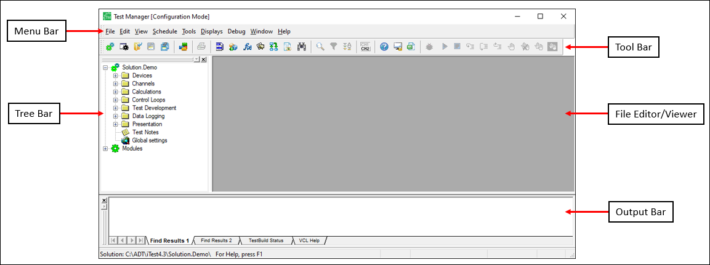

iTest User's Guide
Test Manager is a powerful software tool that is used to develop test configurations that are run on a test system during runtime. You can use Test Manager to design all elements of the testing experience, such as tests, interfaces, and solution components. Its use can be approached from multiple levels of application development that may vary by expertise and power. The documentation discusses basic, intermediate, and advanced application development. From a basic level, Test Manager supports the following:
If your requirements exceed what can be achieved with the previous list, Test Manager supports intermediate application development tools, such as:
Test Manager also supports advanced developmental features, such as:
When Test Manager is first launched, the Select Solution dialog displays. For more information about the Select Solution dialog, refer to the Select Support documentation.
 |
NOTE: | The Select Solution dialog does not display if AutomationPanel or iTest Console is already running. |
To start Test Manager, click the Test Manager icon on your computer or locate the TestMgr.exe file in your $EXECUTE folder. On most systems, Test Manager prompts you to specify the solution to edit upon start up. Once you have selected a solution, the application interface displays.
The default interface contains a menu bar, a tool bar, a tree bar, and an output bar. The default gray area in the middle of the application is the file viewer, where all editing occurs.
Default Test Manager Interface

If you initialize Test Manager while iTest is running, Test Manager will not prompt you to select a solution to edit. The currently running solution will automatically open. If you make changes in Test Manager while the system is running, the changes may have immediate repercussions and modify the outcome of your tests. It is best to avoid major changes in Test Manager while running tests with a real specimen.
To learn more about the Test Manager tree and menu options, refer to the Test Manager Navigation documentation.
The following terms are commonly used throughout the iTest system and its documentation. It is useful to understand their definitions and applications before reading further.
Throughout Test Manager and across iTest documentation, macros are used to refer to specific locations in the installation folder. Current values for these macros are located in the Config.ini file (e.g., C:\ADT\iTest3.8\Config.ini).
iTest Macro Descriptions
| Term | Definition |
| $SYSTEMDIR | This is the folder where iTest is installed on the PC. Example: C:\ADT\iTest4.1\ |
| $SUPPORTDIR | This is the solution folder. Example: C:\ADT\iTest4.1\Solution.Demo\ |
| $DATADIR | This is the folder that contains all logged data. Example: C:\ADT\iTest4.1\Data\ |
| $EXECUTEDIR | This is the folder that contains iTest executable files and other binary files. Example: C:\ADT\iTest4.1\Execute\ |
| $PYTHONDIR | This is the folder that contains Python support files including the supported libraries. Example: C:\ADT\iTest4.1\Execute\Python37\ |
Additional Terms
| Term | Definition |
| RDB | The RDB, or real-time database, refers to the live portion of memory on the PC that contains all channels and the current value of the channel attributes such as value, names, and limits among others. |